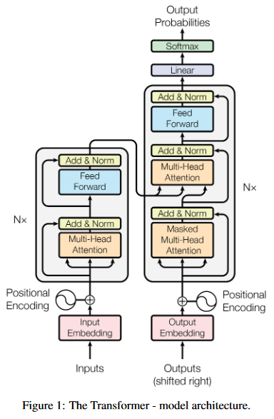

Most competitive neural sequence transduction models have an encoder-decoder structure [5, 2, 35]. Here, the encoder maps an input sequence of symbol representations (x1, ..., xn) to a sequence of continuous representations z = (z1, ..., zn). Given z, the decoder then generates an output sequence (y1, ..., ym) of symbols one element at a time. At each step the model is auto-regressive [10], consuming the previously generated symbols as additional input when generating the next. The Transformer follows this overall architecture using stacked self-attention and point-wise, fully connected layers for both the encoder and decoder, shown in the left and right halves of Figure 1, respectively.

[success]
Transformer摒弃了recurrent结构，这不代表在Transformer中每个时间步之间没有关系。实际上在Transformer中，还是存在从当前时间步到下一个时间步的数据流动。下一个时间步使用了当时步的输出。
class Encoder(nn.Module):
''' A encoder model with self attention mechanism. '''
def __init__(
self, n_src_vocab, d_word_vec, n_layers, n_head, d_k, d_v,
d_model, d_inner, pad_idx, dropout=0.1, n_position=200):
super().__init__()
self.src_word_emb = nn.Embedding(n_src_vocab, d_word_vec, padding_idx=pad_idx)
self.position_enc = PositionalEncoding(d_word_vec, n_position=n_position)
self.dropout = nn.Dropout(p=dropout)
self.layer_stack = nn.ModuleList([
EncoderLayer(d_model, d_inner, n_head, d_k, d_v, dropout=dropout)
for _ in range(n_layers)])
self.layer_norm = nn.LayerNorm(d_model, eps=1e-6)
def forward(self, src_seq, src_mask, return_attns=False):
enc_slf_attn_list = []
# -- Forward
enc_output = self.dropout(self.position_enc(self.src_word_emb(src_seq)))
enc_output = self.layer_norm(enc_output)
for enc_layer in self.layer_stack:
enc_output, enc_slf_attn = enc_layer(enc_output, slf_attn_mask=src_mask)
enc_slf_attn_list += [enc_slf_attn] if return_attns else []
if return_attns:
return enc_output, enc_slf_attn_list
return enc_output,
[success]
Encoder构造函数中的参数说明：n_src_vocab：3.4 Embeddingn_position：3.5 PositionEncodingd_word_vec：3.4 Embedding, 3.5 PEd_model：3.1 EncoderLayer, LayerNormd_inner: 3.1 EncoderLayern_layers: 3.1 EncoderLayern_head: 3.1 EncoderLayerd_k: 3.1 EncoderLayer
class Decoder(nn.Module):
''' A decoder model with self attention mechanism. '''
def __init__(
self, n_trg_vocab, d_word_vec, n_layers, n_head, d_k, d_v,
d_model, d_inner, pad_idx, n_position=200, dropout=0.1):
super().__init__()
self.trg_word_emb = nn.Embedding(n_trg_vocab, d_word_vec, padding_idx=pad_idx)
self.position_enc = PositionalEncoding(d_word_vec, n_position=n_position)
self.dropout = nn.Dropout(p=dropout)
self.layer_stack = nn.ModuleList([
DecoderLayer(d_model, d_inner, n_head, d_k, d_v, dropout=dropout)
for _ in range(n_layers)])
self.layer_norm = nn.LayerNorm(d_model, eps=1e-6)
def forward(self, trg_seq, trg_mask, enc_output, src_mask, return_attns=False):
dec_slf_attn_list, dec_enc_attn_list = [], []
# -- Forward
dec_output = self.dropout(self.position_enc(self.trg_word_emb(trg_seq)))
dec_output = self.layer_norm(dec_output)
for dec_layer in self.layer_stack:
dec_output, dec_slf_attn, dec_enc_attn = dec_layer(
dec_output, enc_output, slf_attn_mask=trg_mask, dec_enc_attn_mask=src_mask)
dec_slf_attn_list += [dec_slf_attn] if return_attns else []
dec_enc_attn_list += [dec_enc_attn] if return_attns else []
if return_attns:
return dec_output, dec_slf_attn_list, dec_enc_attn_list
return dec_output,
class Transformer(nn.Module):
''' A sequence to sequence model with attention mechanism. '''
def __init__(
self, n_src_vocab, n_trg_vocab, src_pad_idx, trg_pad_idx,
d_word_vec=512, d_model=512, d_inner=2048,
n_layers=6, n_head=8, d_k=64, d_v=64, dropout=0.1, n_position=200,
trg_emb_prj_weight_sharing=True, emb_src_trg_weight_sharing=True):
super().__init__()
self.src_pad_idx, self.trg_pad_idx = src_pad_idx, trg_pad_idx
self.encoder = Encoder(
n_src_vocab=n_src_vocab, n_position=n_position,
d_word_vec=d_word_vec, d_model=d_model, d_inner=d_inner,
n_layers=n_layers, n_head=n_head, d_k=d_k, d_v=d_v,
pad_idx=src_pad_idx, dropout=dropout)
self.decoder = Decoder(
n_trg_vocab=n_trg_vocab, n_position=n_position,
d_word_vec=d_word_vec, d_model=d_model, d_inner=d_inner,
n_layers=n_layers, n_head=n_head, d_k=d_k, d_v=d_v,
pad_idx=trg_pad_idx, dropout=dropout)
self.trg_word_prj = nn.Linear(d_model, n_trg_vocab, bias=False)
for p in self.parameters():
if p.dim() > 1:
nn.init.xavier_uniform_(p)
assert d_model == d_word_vec, \
'To facilitate the residual connections, \
the dimensions of all module outputs shall be the same.'
self.x_logit_scale = 1.
if trg_emb_prj_weight_sharing:
# Share the weight between target word embedding & last dense layer
self.trg_word_prj.weight = self.decoder.trg_word_emb.weight
self.x_logit_scale = (d_model ** -0.5)
if emb_src_trg_weight_sharing:
self.encoder.src_word_emb.weight = self.decoder.trg_word_emb.weight
def forward(self, src_seq, trg_seq):
src_mask = get_pad_mask(src_seq, self.src_pad_idx)
trg_mask = get_pad_mask(trg_seq, self.trg_pad_idx) & get_subsequent_mask(trg_seq)
enc_output, *_ = self.encoder(src_seq, src_mask)
dec_output, *_ = self.decoder(trg_seq, trg_mask, enc_output, src_mask)
seq_logit = self.trg_word_prj(dec_output) * self.x_logit_scale
return seq_logit.view(-1, seq_logit.size(2))